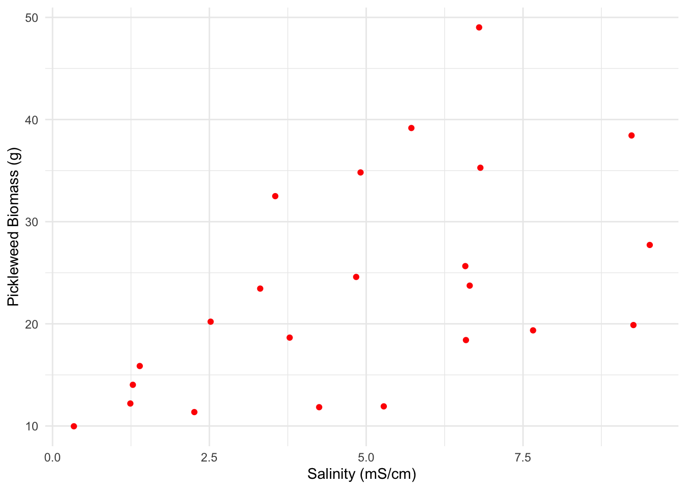
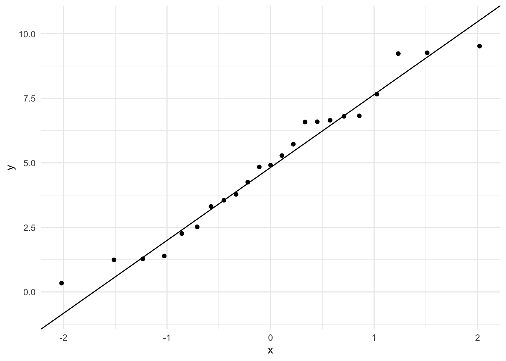
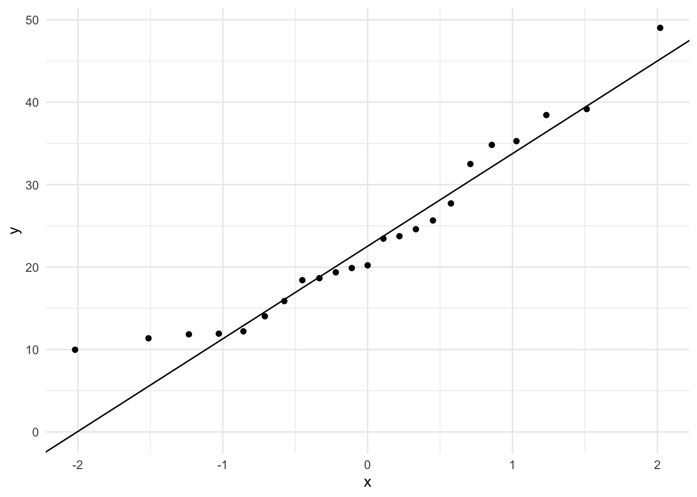
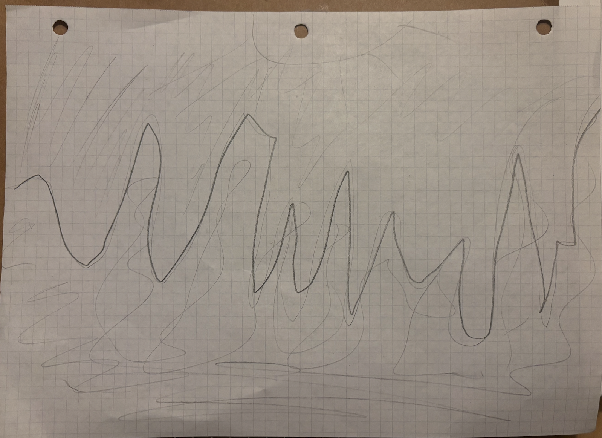
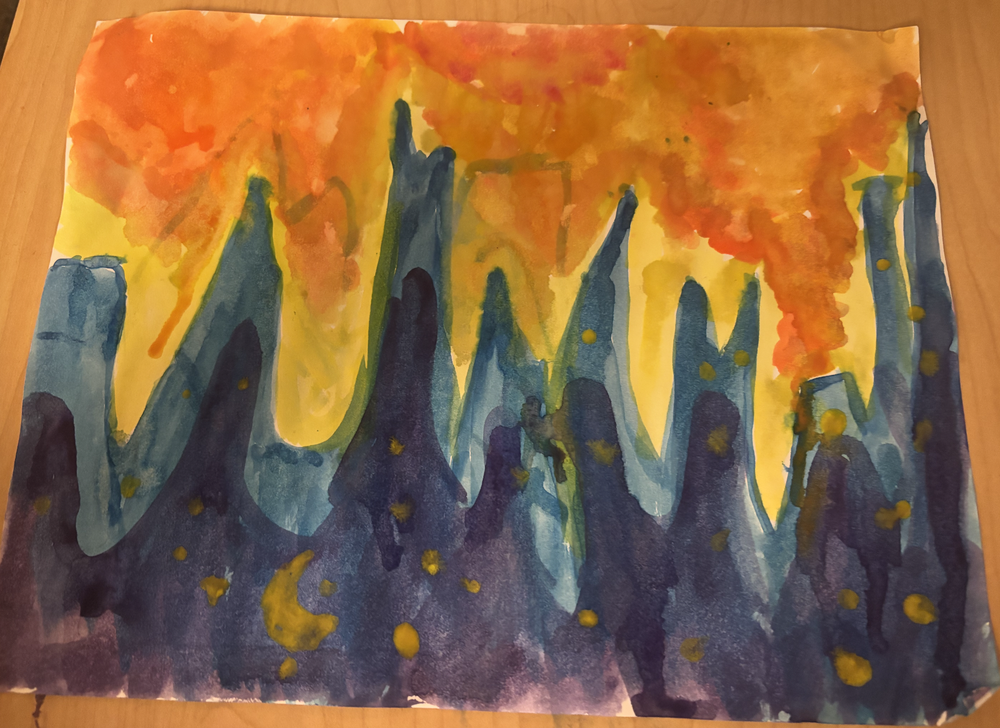
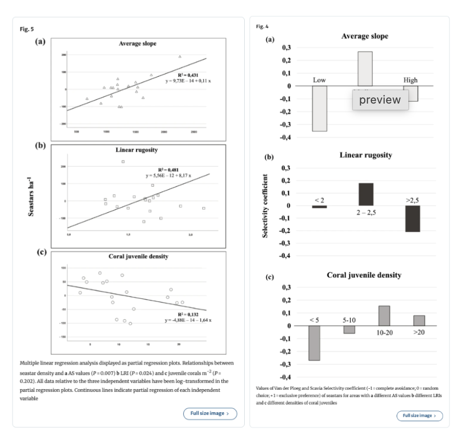

library(tidyverse) #loading in tidyverse
library(here) #loading in here
library(janitor) #loading in janitor
library(readxl) #loading in readxl
library(ggeffects) #loading in ggeffects
library(knitr) #loading in knitr
salinity <- read_csv( #creating salinity data frame
here( #indicating the path to find the data
"data", #indicating it is in the data folder
"salinity-pickleweed.csv" #indicating that it is this file
))
my_data <- read_csv( #creating my_data data frame
here( #indicating the path to find the data
"data", #indicating it is in the data folder
"my_data Sheet2.csv" #indicating that it is this file
))Homework03
Set Up
Problem 1. Slough Soil Salinity
a.
A Pearson’s correlation test would determine the strength of the relationship between salinity and California pickleweed biomass because this type of correlation is meant for continuous variables. However, this also needs the data to be normally distributed. Alternatively, the strength of the relationship could be tested through a Spearman’s rank correlation, which measures the strength and direction of the relationship between the variables and is usually used for non-parametric variables.
b.
ggplot(data = salinity, #creating plot with salinity data frame
aes(x = salinity_mS_cm, #salinity on the x axis
y = pickleweed)) + #pickleweed data on the y axis
geom_point(color = "red") + #changing point colors to red
labs(x = "Salinity (mS/cm)", #labeling x-axis
y = "Pickleweed Biomass (g)") + #labeling y-axis
theme_minimal() #changing theme to minimal
c.
ggplot(data = salinity, #creating plot with salinity data frame
aes(sample = salinity$salinity_mS_cm)) + #isolating the salinity column as the sample
geom_qq() + #creating qq plot
geom_qq_line() + #adding qq line
theme_minimal() #changing theme to minimal
ggplot(data = salinity, #creating plot with salinity data frame
aes(sample = salinity$pickleweed)) + #isolating the pickleweed column as the sample
geom_qq() + #creating qq plot
geom_qq_line() + #adding qq line
theme_minimal() #changing theme to minimal
cor.test(salinity$salinity_mS_cm, #running correlation test using salinity data frame, specifically salinity column
salinity$pickleweed, #running correlation test using salinity data frame, specifically pickleweed column
method = "pearson") #using pearson correlation
Pearson's product-moment correlation
data: salinity$salinity_mS_cm and salinity$pickleweed
t = 2.8979, df = 21, p-value = 0.008605
alternative hypothesis: true correlation is not equal to 0
95 percent confidence interval:
0.1568265 0.7757682
sample estimates:
cor
0.5344778 In the plot in 1b, the linear relationship between the two variables is tested and determined to exist. I used QQ plots for each column to test the normality condition, which was normal. In the correlation test above, which is a Pearson Correlation test, the strength of this relationship is tested and is determined to be of moderate strength (Pearson’s r = 0.53, t(21) = 2.90, p = 0.009, \(\alpha\) = 0.05).
d.
To evaluate the assumption that the predictor variable (salinity) does not predict the response variable (pickleweed), I used a scatter plot, which indicated that there may be a positive relationship between the variables. To evaluate the strength of the relationship between pickleweed biomass and soil salinity, I used Pearson’s Correlation test, which resulted in the variables having moderate strength relationship between the variables (Pearson’s r = 0.53, t(21) = 2.90, p = 0.009, \(\alpha\) = 0.05). This means that, as salinity increases in an environment, the biomass of pickleweed will also increase.
e.
Based on the data, pickleweed biomass in grams and salinity (mS/cm) have a positive relationship, meaning that, with higher salinity, there will be more biomass of pickleweed. This indicates that there will be a higher planting success at a site with higher salinity, though the strength of this relationship is only moderate.
f.
cor.test(salinity$salinity_mS_cm, #running correlation test using salinity data frame, specifically salinity column
salinity$pickleweed, #running correlation test using salinity data frame, specifically pickleweed column
method = "spearman") #using spearman correlation
Spearman's rank correlation rho
data: salinity$salinity_mS_cm and salinity$pickleweed
S = 824, p-value = 0.003426
alternative hypothesis: true rho is not equal to 0
sample estimates:
rho
0.5928854 Both tests (Pearson’s Correlation and Spearman’s Correlation) would have led me to make the same decision (rejecting the null hypothesis) because the correlation coefficients are similar values that are close to 0.6 and indicate a moderate strength relationship.
Problem 2. Personal Data
a.
my_data_clean <- my_data |> #labeling new data frame
clean_names() #cleaned names to only include lower case letters and underscores
ggplot(data = my_data_clean, #using my_data_clean data frame
aes(x = school_day_yes_no, #placing school_day_yes_no on the x-axis
y = wake_up_time_hrs_min, #placing wake_up_time_hrs_min on the y-axis
color = school_day_yes_no)) + #color by school_day_yes_no
geom_boxplot() + #creating a boxplot
labs(x = "School Day", #labeling the x-axis as School Day
y = "Wake Up time (hrs:min)", #labeling the y-axis as Wake Up time (hrs:min)
title = "Wake Up Time for School Days vs Non-School Days", #creating title
subtitle = "03/01/2026") + #creating subtitle
geom_jitter() + #creating jittered points
theme_light() + #changing theme to light
scale_color_manual(values = c("yes" = "blue4",
"no" = "red4")) + #changing colors based on whether or not it is a school day
theme(legend.position = "none") #removing the legend
ggplot(data = my_data_clean, #determining data frame
aes(x = date, #placing these observations on the x-axis
y = wake_up_time_hrs_min)) + #placing these observations on the x-axis
geom_point(color = "gold") + #making the points gold
labs(x = "Date", #labeling the x-axis
y = "Wake Up time (hrs:min)", #labeling the y-axis
title = "Wake Up Time for Each Day", #creating a title
subtitle = "03/01/2026") + #creating a subtitle
theme_light() + #changing the theme to light
theme(axis.text.x = element_text(angle = 90, vjust = 0.5, hjust = 1, size = 8)) #changing the text on the x-axis to be vertical and smaller 
b.
Figure 1. This figure shows the distribution of recorded wake up times between school days, which is denoted by the blue points, and non-school days, which is denoted by the red points. Additionally, the figure shows the medians and quartiles for each type of day, represented by the boxes and lines, indicating that the median wake up time is later on non-school days than on school days.
Figure 2. This figure shows the distribution of recorded wake up times for each day from 01/25/2026 to 03/01/2026, denoted by the gold points.
Problem 3. Affective Visualization
a.
I think an affective visualization could look be similar to figure two, where instead of the points and axis, it could look like a sunrise where each point is supposed to fall, given that the data is showing when I wake up.
b.

c.

d.
This piece displays the time I wake up each day from 1/25/26 to 3/1/26. I was primarily influenced by watercolor techniques, as it is a watercolor painting created by layering different colors.
e.
Problem 4. Statistical Critique
a.
The test in this paper is a one-way ANOVA test, though it also includes multiple regressions, linear regressions, and pearson correlations. Seastar abundance was the response variable and the predictor variables were the linear rugosity, coral juvenile density, and average slope.

b.
I would say the authors did well in representing their statistics in figures. The figures adequately represent the linear regression and selectivity coefficients, as the x- and y- axes are in logical positions and the figures do show the underlying data in their model predictions. However, these figures do not include summary statistics.
c.
I would say there is minimal “visual clutter” overall. I think the data to ink ratio is relatively high, as there are few elements that aren’t directly displaying the data.
d.
The authors could add more information to the caption, which would make the figures more digestible and bring clarity to the point of the figure. For figure 5, it might be beneficial to make the axes tick labels clearer.